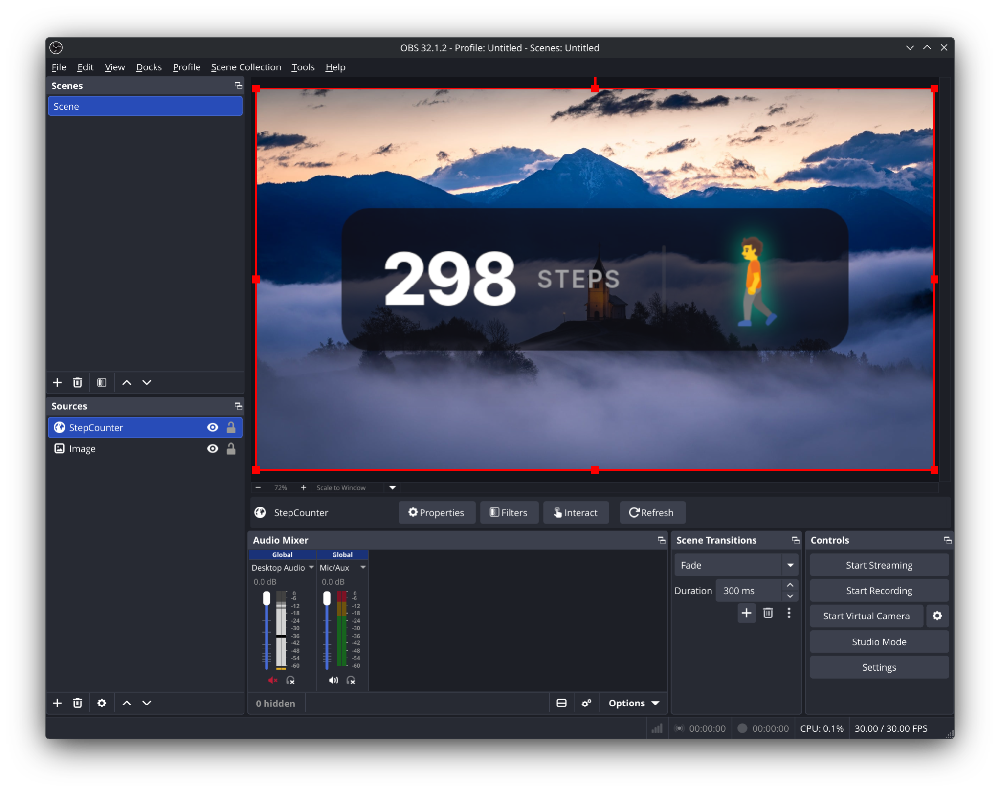
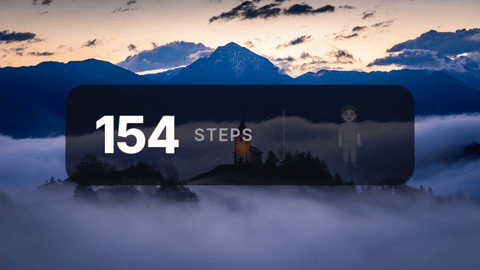
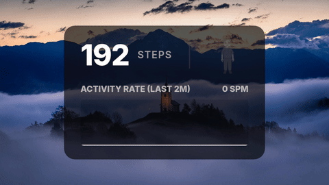
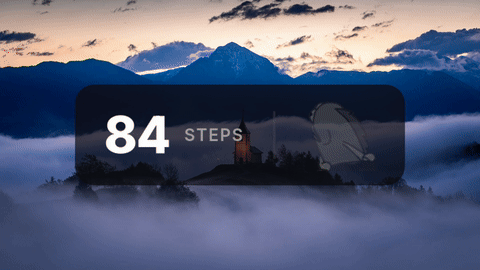

Real-time step tracking for your stream. No subscriptions, no cloud, and zero privacy risks. Just plug it in and walk.




Your movement data never leaves your home network. No cloud accounts, no telemetry, and zero reliance on third-party fitness apps.
Works flawlessly as a standard Browser Source. Zero delay, zero screen-capture clipping, and no extra PC software required.
Automatically detects whether you are standing still, walking, or running, instantly updating the stream graphic to match your energy.
Browse the Theme Gallery, tweak colours and effects with a live preview, then download a single self-contained file — no device config required.
Tracks your device battery life and flashes a low-power warning directly on your stream overlay so you never drop out mid-broadcast.
No coding required. Install the software and connect the device to your Wi-Fi directly through Chrome or Edge with a single click.
Plug your M5StickS3 into your PC via USB. Use our web installer to load the tracker software directly from your browser.
Immediately after installing, click "Configure Wi-Fi" in your browser to securely connect the tracker to your home network.
Open the Theme Gallery, choose a style, customise the colours, and download the file.
In OBS, click + → Browser Source, enable Local file, and browse to the downloaded file. Set the width to control the size, leave Custom CSS empty, and start walking.